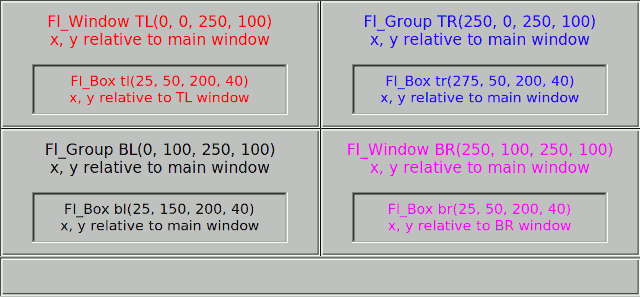
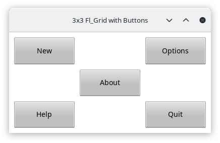
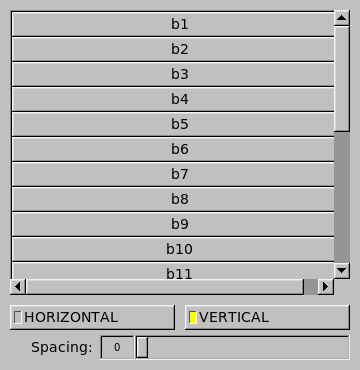
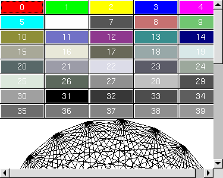
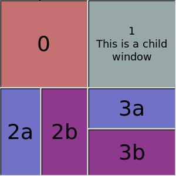
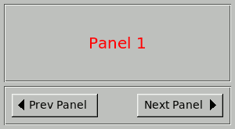

This chapter describes the coordinate systems that apply when positioning widgets manually, and some of the basics of FLTK layout widgets that are used to position widgets automatically.
The Widget Coordinate System
All widgets have constructors with x and y parameters to let the programmer specify the desired initial position of the top left corner during explicit manual layout within Fl_Window and Fl_Group container widgets.
This position is always relative to the enclosing Fl_Window, which is usually, but not always, the top-level application window, or a free-floating pop-up dialog window. In some cases it could also be a subwindow embedded in a higher-level window, as shown in the figure below.

The positions of the TL and BR sub-windows and the TR and BL groups are all relative to the top-left corner of the main window. The positions of the boxes inside the TR and BL groups are also relative to the main window, but the boxes inside the TL and BR sub-windows are positioned relative to the enclosing sub-window.
In other words, the widget hierarchy and positions can be summarized as:
Fl_Window main window
Fl_Window TL subwindow # x, y relative to main window
Fl_Box tl box # x, y relative to TL subwindow
Fl_Window BR subwindow # x, y relative to main window
Fl_Box br box # x, y relative to BR subwindow
Fl_Group TR group # x, y relative to main window
Fl_Box tr box # x, y relative to main window
Fl_Group BL group # x, y relative to main window
Fl_Box bl box # x, y relative to main window
Layout and Container Widgets
There are four main groups of widgets derived from Fl_Group for a range of different purposes.
The first group are composite widgets that each contain a fixed set of components that work together for a specific purpose, rather than layout widgets as such, and are not discussed here.
The second group are basically containers offering the same manual layout features as Fl_Group, as described above, but which add one new capability. These widgets are Fl_Scroll, Fl_Tabs and Fl_Wizard.
The third group are layout managers that relocate and resize the child widgets added to them in order to satisfy a particular layout algorithm. These widgets are Fl_Flex, Fl_Grid, Fl_Pack, and Fl_Tile.
The final group consists of Fl_Window and its derivatives. Their special capability is that they can be top-level application windows and dialogs that interface with the operating system window manager, but can also be embedded within other windows and groups as shown in the example above. Note that the window manager may impose its own constraints on the position of top-level windows, and the x and y position parameters may be treated as hints, or even ignored. The Fl_Window class has an extra constructor that omits them.
Descriptions of layout and container widgets follow in alphabetical order.
The Fl_Flex Layout Widget
The Fl_Flex widget allows the layout of its direct children as a single row or column. If its type() is set to give the row or horizontal layout, the children are all resized to have the same height as the Fl_Flex and are moved next to each other. If set to give the column or vertical layout, the children are all resized to have the same width as the Fl_Flex and are then stacked below each other.
Widget positions (x, y) need not be given by the user because widgets are positioned inside the Fl_Flex container in the order of its children. Widget sizes can be set to (0, 0) as in Fl_Pack since they are calculated by Fl_Flex.
This is similar to Fl_Pack described below and Fl_Flex is designed to act as a drop-in replacement of Fl_Pack with some minor differences.
Other than Fl_Pack the Fl_Flex widget does not resize itself but resizes its children to fill the entire space of the Fl_Flex container. Single children of Fl_Flex can be set to fixed sizes to inhibit this resizing behavior. In this case the remaining space is distributed to all non-fixed widgets.
Fl_Flex widgets can be nested inside each other and with Fl_Grid in any combination.
The name Fl_Flex was inspired by the CSS 'flex' container.

Fl_Flex was added in FLTK 1.4.0.
The Fl_Grid Layout Widget
Fl_Grid is the most flexible layout container in FLTK 1.4. It is based on a flexible grid of cells that can be assigned one widget per cell which is the anchor of the widget. Widgets can span multiple rows and columns and the cells can constitute a sparse matrix. Widgets can be aligned inside their cells in several ways (left, right, top, bottom) and can stretch horizontally, vertically, or both, i.e. fill the entire cell.
Widget positions (x, y) need not be given by the user because widgets are assigned to a particular grid cell by row and column number. Widget sizes can be given as their minimal sizes and will be resized appropriately depending on the free space.
Optional margins around all cells inside the widget border and gaps between rows and cells make the layout even more flexible.
The Fl_Grid widget should be designed with a grid (matrix) and its minimal size in mind. It is designed to enlarge cells and widgets in a flexible way when the Fl_Grid widget itself is created or resized.
Additional free space inside the Fl_Grid container is distributed to widgets by considering minimal row heights, column widths, sizes of widgets, and row and column weights. These weights are used to distribute the free space proportionally according to the row and column weights.
Fl_Grid widgets can be nested inside each other and with Fl_Flex and other subclasses of Fl_Group in any combination.
- Note
- We don't recommend to use Fl_Pack as child widgets although this may work as well.
The name Fl_Grid was inspired by the CSS 'grid' container but it has some properties in common with HTML <table> containers as well, for instance row and column spanning.

Fl_Grid was added in FLTK 1.4.0.
The Fl_Pack Layout Widget
The Fl_Pack widget allows the layout of its direct children as a single row, or column. If its type() is set to give the row or horizontal layout, the children are all resized to have the same height as the Fl_Pack and are moved next to each other. If set to give the column or vertical layout, the children are all resized to have the same width as the Fl_Pack and are then stacked below each other. The Fl_Pack then resizes itself to shrink-wrap itself around all of the children.
Fl_Pack widgets are often used inside an Fl_Scroll, as shown in the diagram below, to avoid having to deal with tricky resize behavior when used with nested widgets.

Since FLTK 1.4.0 Fl_Flex (described above) can in many cases be used as a drop-in replacement for Fl_Pack if this "shrink-wrap" behavior is not required. Note that the Fl_Pack layout algorithm can cause some issues because its widget size can change depending on its children and particularly because this is done late, i.e. during draw() and not as usual during resize of the window.
- Note
- We recommend that developers evaluate whether using Fl_Flex or Fl_Grid instead of Fl_Pack can be a better solution with more predictable and reliable resizing behavior of the overall program layout.
The Fl_Scroll Container Widget
The Fl_Scroll container widget can hold an assortment of widgets that may extend beyond its own width and height, in which case horizontal and/or vertical scrollbars may appear automatically so that you can scroll and view the entire contents.

The Fl_Tabs Container Widget
The Fl_Tabs widget provides a front-to-back stack of individual panels which usually contain Fl_Group widgets and their children. The user can switch between panels by clicking on the small tabs that protrude from the panels. The appearance of each tab is determined by the child widget's label and related attributes.

The Fl_Tile Layout Widget
The Fl_Tile widget allows the user to resize one or more of its children by dragging on the border between adjacent child widgets. However, the programmer must first explicitly layout the child widgets so that their borders exactly fill the width and height of the Fl_Tile without having any gaps between them, or at the edges. Some care is needed when initially positioning the children and setting the resizable() widget within the Fl_Tile to prevent squeezing a child to have a zero width or height. For more information see the Fl_Tile widget manual page, and How Does Resizing Work?.

The Fl_Wizard Container Widget
The Fl_Wizard widget derives from the Fl_Tabs class, but instead of having tabs that the user can click to select the corresponding panel, the programmer uses the prev(), next() or value() methods to show the appropriate panel. For example, the user might be able to click on "Next" and "Prev" navigation buttons or keys, as shown below.

| [Prev] Common Widgets and Attributes | [Index] | How Does Resizing Work? [Next] |